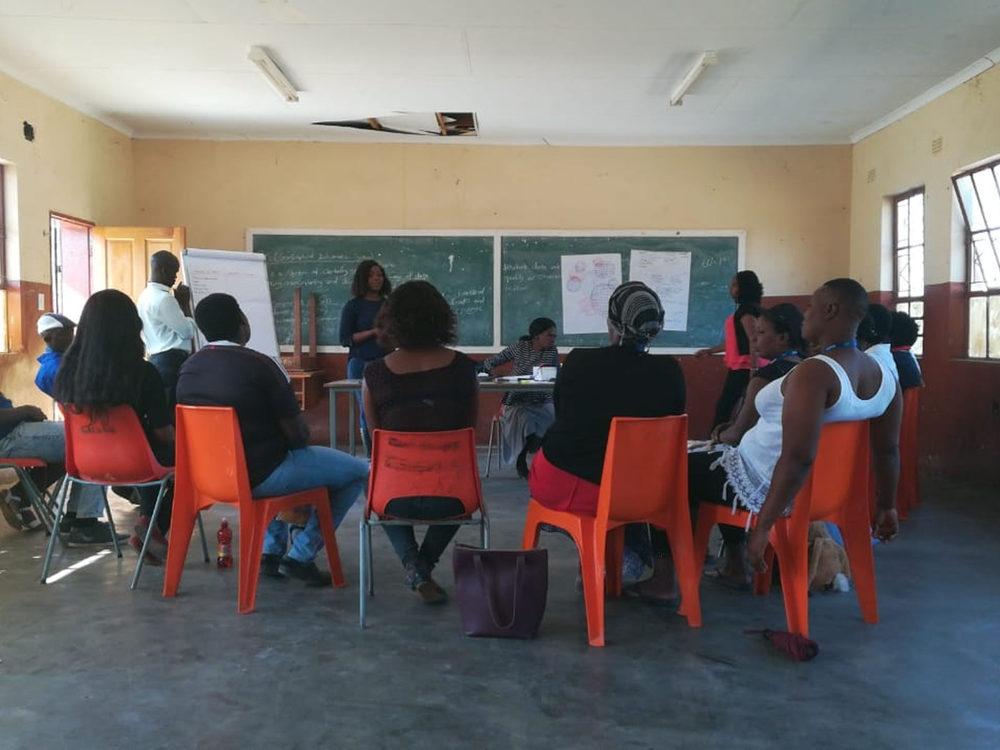

News · November 2022
‘Voice needs teeth to have bite’: the South African work behind this study

Before COLCOS there was Mpumalanga. In November 2022 the team published ‘Voice needs teeth to have bite’! Expanding community-led multisectoral action-learning to address alcohol and drug abuse in rural South Africa in PLOS Global Public Health — and the local press picked it up as a proposal for how drug and alcohol services in the north-east of Scotland might work differently.
The argument was that people who have sought help for drugs and alcohol should be actively involved in developing the services meant to help them. As Lucia D’Ambruoso put it at the time: the health issues under investigation were not imposed by outsiders but directed by participants, because people are experts in their own lives. What is critical, and often missing, is connecting community voice to the authorities — establishing a cycle of community voice and state response.
John Mooney, consultant in public health with NHS Grampian, said the work with marginalised service user groups in South Africa was likely to be of great significance as the board looked to engage its lived experience community across its drug and alcohol services.
That is the method this study brought home. It is also why the finding about embedding cessation in addiction services, which surfaced two years later, was not entirely a surprise.
Above: a community workshop in Mpumalanga, South Africa — the VAPAR learning platform, where the approach was developed
All news